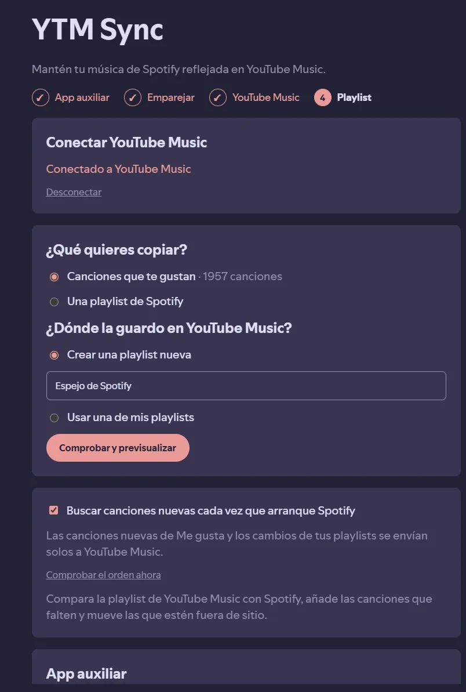

YTM Sync · Herramienta · App de Spotify
YTM SYNC · PLAYER✕
YTM Sync · Herramienta · App de Spotify
TypeScript · Python · Flask · ytmusicapi
Mantiene una playlist de Spotify (o tus Me gusta) copiada y en el mismo orden en YouTube Music. App personalizada de Spicetify con un ayudante local en Python.
Lista de reproducción · Qué hace
- Primera copia de los Me gusta o de una playlist a una playlist nueva o existente de YouTube Music.
- En cada arranque de Spotify, las canciones nuevas suben arriba y se aplican los cambios de las playlists copiadas.
- Las coincidencias dudosas pasan a una lista de revisión con sugerencias para aceptar, reemplazar u omitir.
- Tarjeta «Tus copias» para desactivarlas u olvidarlas, sin borrar nada en ninguno de los dos servicios.
Etiquetas del archivo
- Título
- YTM Sync
- Artista
- Damián Cambeiro
- Álbum
- Portfolio
- Género
- Herramienta · App de Spotify
- Tecnologías
- TypeScript, Python, Flask, ytmusicapi, SQLite, Spicetify
- Información
- Versión beta 0.1.x para Windows, con licencia MIT.
- Probada con unas 2.000 canciones de Me gusta.
- Lee los datos de Spotify con las APIs internas de Spicetify: no necesita la API web de Spotify ni Premium.
- Comentario
- YouTube Music no tiene API oficial, así que ytmusicapi puede dejar de funcionar en cualquier momento. La sesión se guarda solo en tu equipo y el proyecto no está afiliado a Spotify, Google, YouTube ni Spicetify.
Captura real
